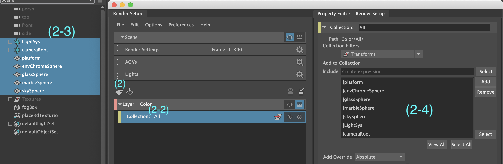
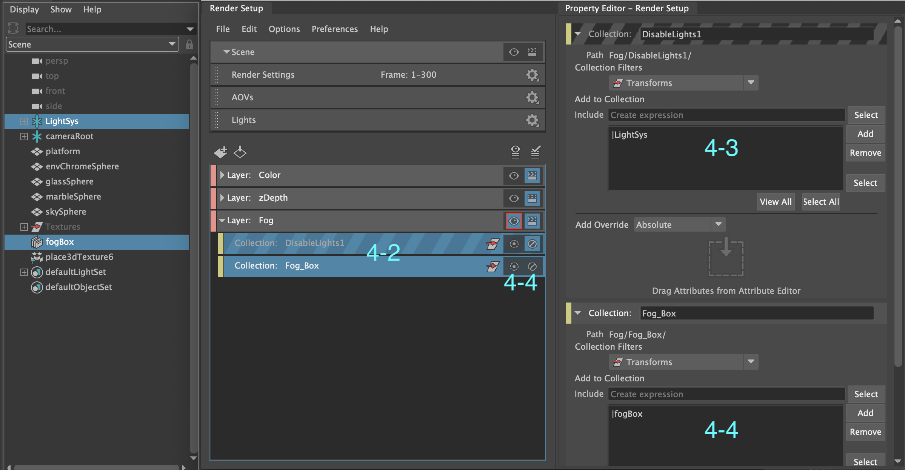
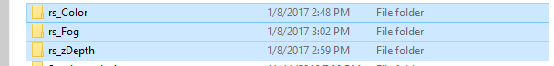
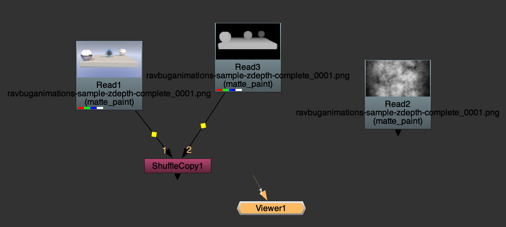
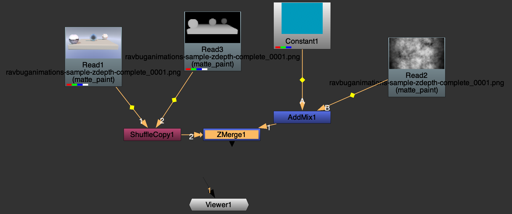
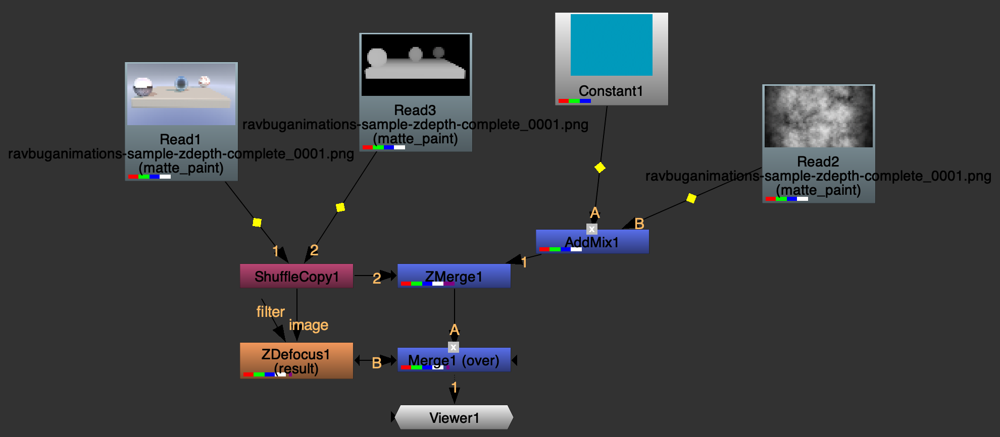
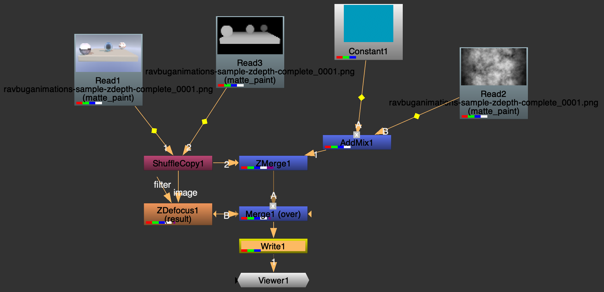

Software you will need:
- Autodesk Maya 2016 Extension 2 or higher
- Nuke 10 (licensed or non-commerical)
Setting up the Scene
You do not need to start with an empty scene. If there's already animation/lighting/vfx in the scene does not matter.- Open your 3D scene in Maya and open the Render Setup window (In Windows -> Rendering Editors -> Render Setup)
- Create a new Render Layer, and rename it to "Color"
- Right-click the layer and add a new collection
- Name it "Elements"
- In the outliner, select all your geometry and lights
- In the Property Editor of the Render Setup window, click the [Add] button. 
- Create a new collection, rename it to "Geometry" and add only the geometry of your scene to it
- Create a new collection, and add all of your lights to it
- Disable the collection containing your lights (this way they don't shine and mess up the depth map
- Select the surfaceShader, and middle-mouse drag it to the Override Material box in the
Render Setup View
- To create the objects for the fog pass,
- create a volume cube and encompass your whole scene with it.
- In the cubeFog properties, assign a Cloud texture to the transparency attribute. You don't
need to change anything about the fog pass.
- Create two collections for the Fog layer: "Fog_Object" and "Disable_Lights"
- Add your volume box to the "Fog_Object" collection
- Add all your lights to the "Disable_Lights" collection, and then disable the collection.
- Click the Eye to make the Fog Layer visible. You should only see the volume box and nothing else.

- Make sure that the Depth pass does not render a colored background (have a transparent background)
- It should create 3 folders in the images directory: "Color" "zDepth" and "Fog", each containing the
correct data.

Compositing the scene
You are done with Maya now. Make sure you like the output of your three image sequences before continuing to the next steps.If you prefer a different compositor and know how to composite the depth, then you can skip the rest of this document.
The Basics of Nuke:
- Creating nodes in nuke:
- Launch Nuke, and create a new project.
- Go to Edit -> Project Settings (or press [S] on your keyboard)
- Set frame range so it matches your image sequences, then close the panel
- Drag your image sequences from the file explorer into the project viewer (or import them from File ->
Import File(s))
- They should have rendered into 3 folders: "rs_Color" "rs_zDepth" and "rs_Fog"
- They should have rendered into 3 folders: "rs_Color" "rs_zDepth" and "rs_Fog"
- Click the Node Graph tab at the middle-right of the window
- Drag your sequences from the Project viewer into the node graph
- In the Node Graph, create a ShuffleCopy node
- Connect the (1) to the Color sequence and the (2) to the Depth sequence
- Set the properties as follows:

- Set the properties as follows:
- Create a Constant node, and set it to any color that's not black
- Create an AddMix node, and connect the (A) to the Constant, and the (B) to the Fog sequence
- Create a ZMerge node, and connect the (1) input to the AddMix node and the (2) Input to the ShuffleCopy node
- Z channel: depth.Z
- Alpha channel: depth.Z
- smaller Z = further away: checked

- Create a ZDefocus Node, and connect the (Image) input to the ShuffleCopy node
- math: depth
- blur inside: unchecked
- Create a Merge node, and connect the (A) input to the ZMerge node and the (B) input to the ZDefocus node
- Decrease mix to around 0.225

- Decrease mix to around 0.225
- Connect the Viewer input to the Merge node.
- Your node graph is done! Connect any extra nodes for further compositing to the Merge Node
Tweaking the setup:
To change how the different nodes interact, change the following values:- Depth of Field distance: In the ZDefocus node, change the Focus Plane attribute. Larger values = closer blurring Alternatively, you can drag the focal_point handle in the viewer to interactively set the focus plane.
- Depth of Field strength: Change the size value of the ZDefocus node.
- Depth of field end strength: Change the maximum value of the ZDefocus node.
- Fog Color: Change the color of the Constant node. If you want the color to be something else, just replace the Constant node with a different setup. Just make sure the final output of that setup outputs to the (A) input on the AddMix node.
- Fog Density: Change the mix value of the AddMix node
- Fog Distance/Intensity: Change the mix value of the Merge node (Not the ZMerge node!)
Rendering the final composite
To export your composite as a video file or as an image sequence, do the following:- Create a Write node and connect the input to the Merge node (if the viewer is already connected, just drag
the Write node over the dashed line)
 - For a Video output
- file type: mov
- Codec: h.264 (if present) or Apple ProRes 4444
- For an image sequence output
- file type: select any image format (I recommend .exr or .tiff for preserving ultrawhite values, or .png for regular clamping.
- To render the alpha channel, set channels to rgba
- Click the folder icon next to file and select a folder to write the file in (make sure to include the extension!)
- To exclude the DOF disable the ZDefocus node (optional)
- Go to Render -> All Write nodes (or press F5 on your keyboard)
- (Optional) check render in background, set the frame range if incorrect, and press [OK]
- Wait for the render to complete (this can take a while on slow hardware)